간수치
간수치 (간기능검사) - AST, ALT란 무엇인가? youtube
간수치(간기능검사) - ALP란 무엇인가? youtube

간수치(간기능검사) - 빌리루빈(bilirubin)이란 무엇인가? youtube
간수치(간기능검사) - 알부민(albumin)이란 무엇인가? youtube
간기능반영검사 - 프로트롬빈시간(Prothrombin time, PT)란 무엇인가? youtube

간수치 이상이 있을 때 생각해야 할 것들 youtube
간수치 이상이 있는데 간 이상이 아닌 경우 youtube

간기능저하시 세균감염이 증가하는 이유는 youtube
간수치 300 vs 5000 무엇이 더 위험할까 youtube

간은 무슨 일을 할까 (간기능) - 단백질대사 youtube
간은 무슨 일을 할까 (간기능) - 지방대사 youtube
간은 무슨 일을 할까 (간기능) - 탄수화물대사 youtube
간은 무슨일을 할까(간기능) - 호르몬 감시 youtube

알부민이 감소했을 때 생각해야 할 것들 youtube
간과 비타민 youtube

간수치 (간기능검사) - GGT(감마지티피)란 무엇인가? youtube
간암
맨위로
간암의 영상진단을 위한 대전제 youtube

간암의 5년 생존율, 얼마나 될까? youtube

간암의 치료 중 고주파열치료술(RFA)을 못하는 경우들 youtube
간암의 치료 - 수술 vs 고주파열치료술(RFA) youtube
간암의 치료 - 고주파열치료술(RFA)의 치료원리 youtube
술을 마시면 왜 간암의 발생위험이 증가할까? 알코올의 발암기전 youtube
잔존 간기능 평가방법 - Child등급 youtube
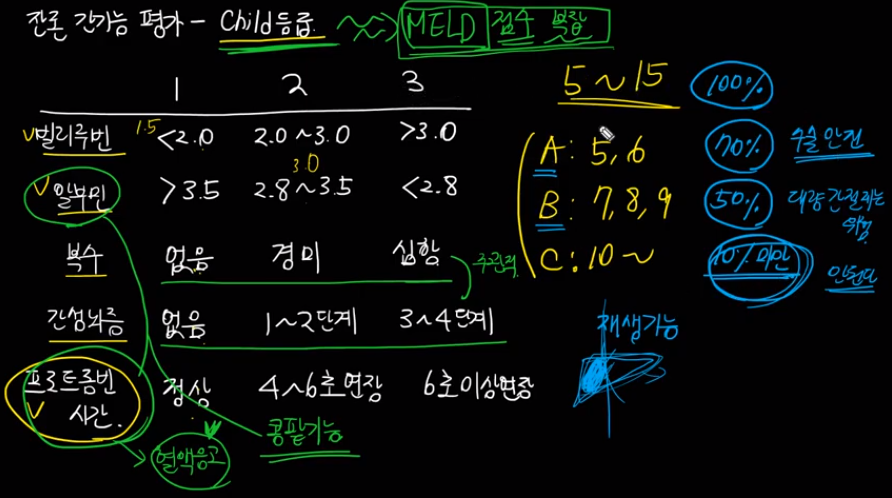
간암의 치료 - 경동맥화학색전술을 시행한 후 발생할 수 있는 합병증 youtube
간암의 치료 - 경동맥화학색전술, 어떤 경우에 하는가?(적응증) youtube
간암 - 수술을 못하는 경우들 youtube
간암의 치료 - 경동맥화학색전술(TACE)의 치료원리 youtube
간경변증에서 간성뇌증이 나타나는 이유는 youtube
간암의 감시검사, 누구에게 필요한가 youtube
황달이 생기면 반드시 병원에 가보셔야 합니다 youtube

간기능저하시 세균감염이 증가하는 이유는 youtube
간암의 위험인자, 발암물질 youtube
간암의 병기 (mUICC분류) youtube
간암 전형적 영상소견 youtube
간암 진단 알고리즘 youtube
간암의 치료, 수술의 조건 youtube
니볼루맙(면역항암제)의 작용기전 youtube

니볼루맙(면역항암제, 옵디보) 투여 후 간수치 상승, 가능한 원인 youtube

간암의 치료 - 경동맥방사선색전술(TARE)에 관하여 youtube

경동맥화학색전술(TACE)의 합병증 - 급성 담낭염 youtube

경동맥화학색전술(TACE)의 드문 합병증 - 폐색전증 youtube

경동맥화학색전술(TACE)의 합병증 - 간농양 youtube

간암 수술 이후 재발의 원인 youtube
알파태아단백(AFP)의 급격한 감소, 간암이 잘 치료된 것인가 youtube

간경변
맨위로
간 손상시에 왜 간이 딱딱해질까 youtube
간경변증, 무슨 증상이 나타날까 youtube
간경변증시에 나타나는 간수치 변화 youtube

문맥압항진증의 세가지 형태 youtube

간경변증에서 문맥압항진이 발생하는 이유 youtube

간질환에서 위장관출혈이 잘 발생하는 이유 youtube
간경변증시 식도정맥류 출혈, 왜 위험한가 youtube

한번도 출혈한 적이 없는 식도정맥류, 어떻게 해야 할까 youtube

식도 정맥류의 치료 - 경정맥간내문맥전신단락술(TIPS) youtube

식도 정맥류 출혈의 치료 - 풍선압박지혈술 youtube

식도 정맥류 출혈의 예방법 - 베타차단제 youtube

식도 정맥류 출혈의 단계적 접근법 youtube

급성 정맥류 출혈시 사용하는 약물 youtube

정맥류 출혈의 내시경적 치료 youtube

간경변증에서 복수가 발생하는 이유 youtube

복수는 왜 생기나 youtube

간경변증 - 복수가 있을 때 식이요법 youtube

간경변성 복수의 치료 - 이뇨제(diuretics)를 어떻게 사용할까 youtube

간경변증의 합병증 - 자발성 세균성 복막염 youtube

간경화에서 혈소판이 감소하는 이유 youtube

혈액은 어떻게 혈관 안에 있을까, 알부민의 역할 youtube

간신증후군(hepatorenal syndrome)이란 무엇인가 youtube

간경화 환자 보는 법 - 간신증후군 환자에 대한 종합적 접근 youtube

간경변증에서 저나트륨혈증이 생기는 근본이유는 youtube

간성뇌증의 단계 youtube
간이식 누가 받을 수 있는가 youtube
B형간염
맨위로
B형간염 바이러스의 구조 youtube

B형간염 - 유전자변이 youtube
B형간염의 감염실태 youtube

급성 B형간염의 진단 youtube
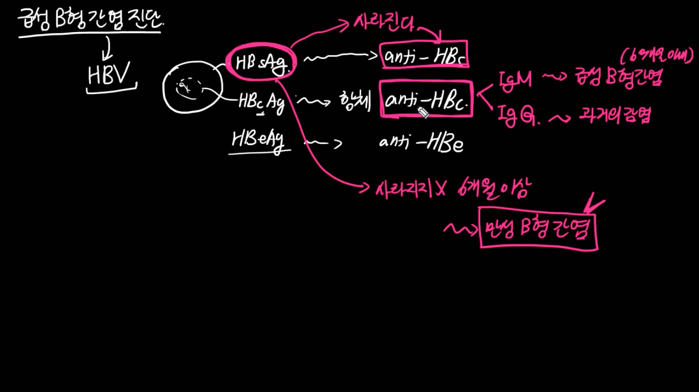
급성B형간염 - 플레이어, 각종항체생성시기 youtube

급성 B형간염 - 매우 위험한 경우 youtube
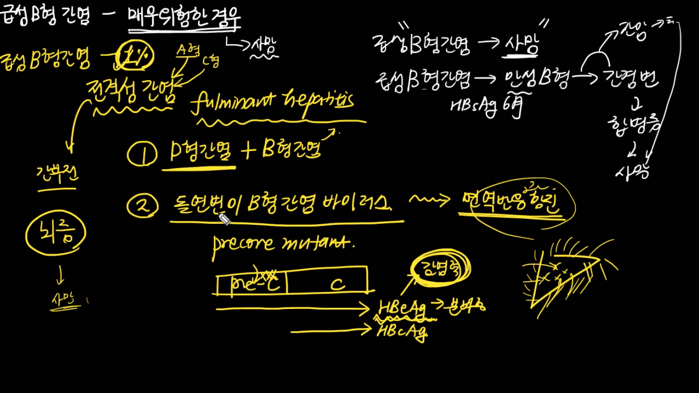
급성 B형간염 - 노출 후 예방법 youtube

급성 B형간염 - 만성으로 진행할 확률 youtube
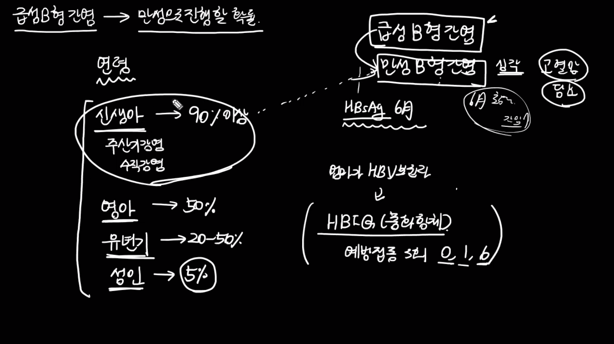
만성 B형간염의 4단계 자연경과 youtube

만성 B형간염에서 간암으로 진행하는 위험인자 youtube

B형간염바이러스는 어떻게 간암을 일으킬까, 발암기전 youtube
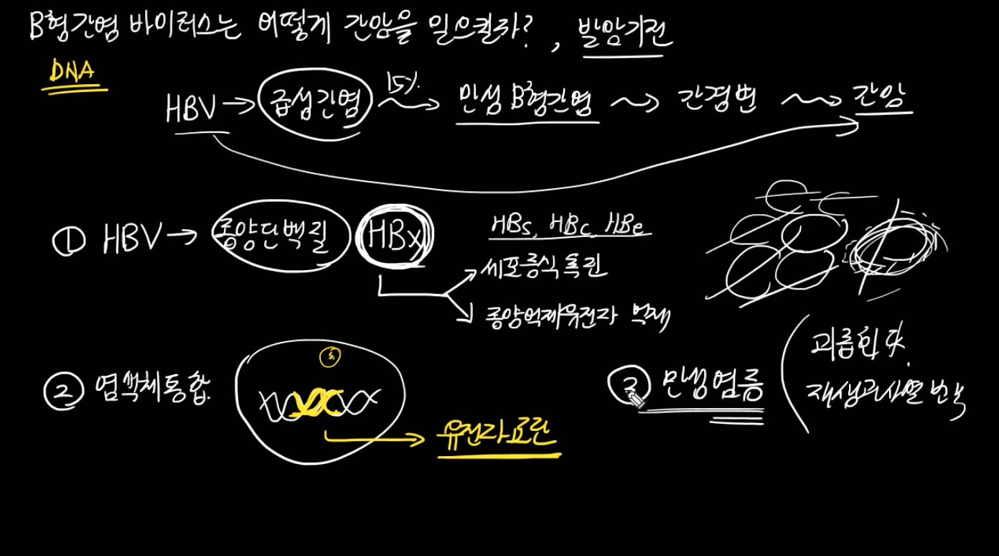
만성 B형간염에서 A형간염 검사가 필요한 이유는 youtube
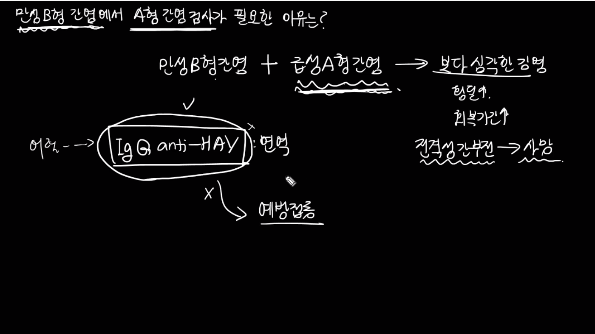
만성 B형간염에서 조직검사를 고려하는 경우는 youtube

B형간염치료
맨위로
만성 B형간염 환자에서 항바이러스치료는 왜 해야 할까 youtube
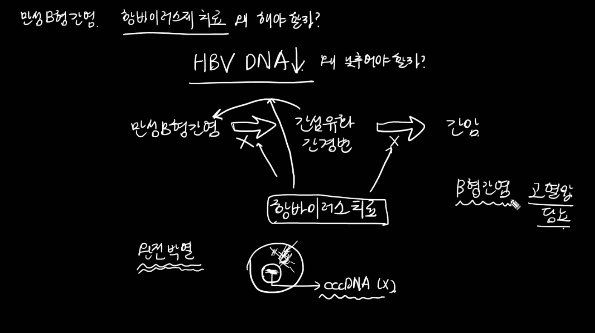
만성 B형간염, 완전박멸이 가능할까 youtube

만성 B형간염, 언제 누가 치료를 받아야 하는가 youtube
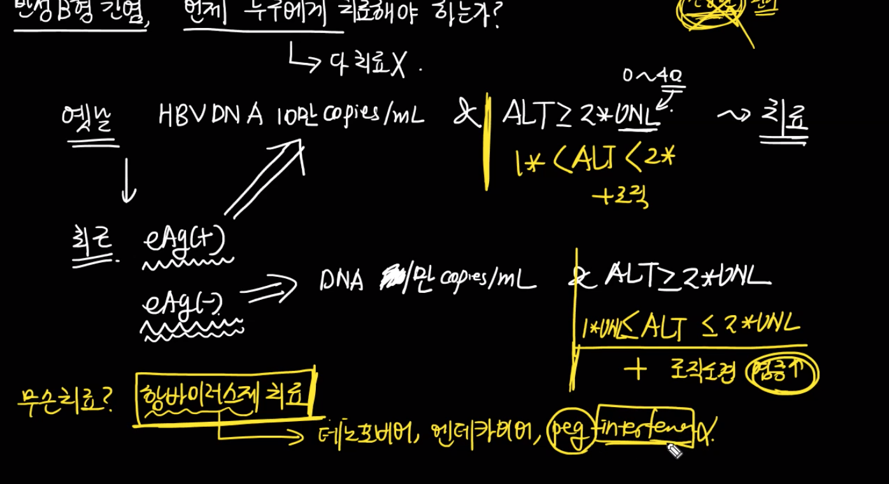
간경변증인데 B형간염 치료 받아야 하나 youtube
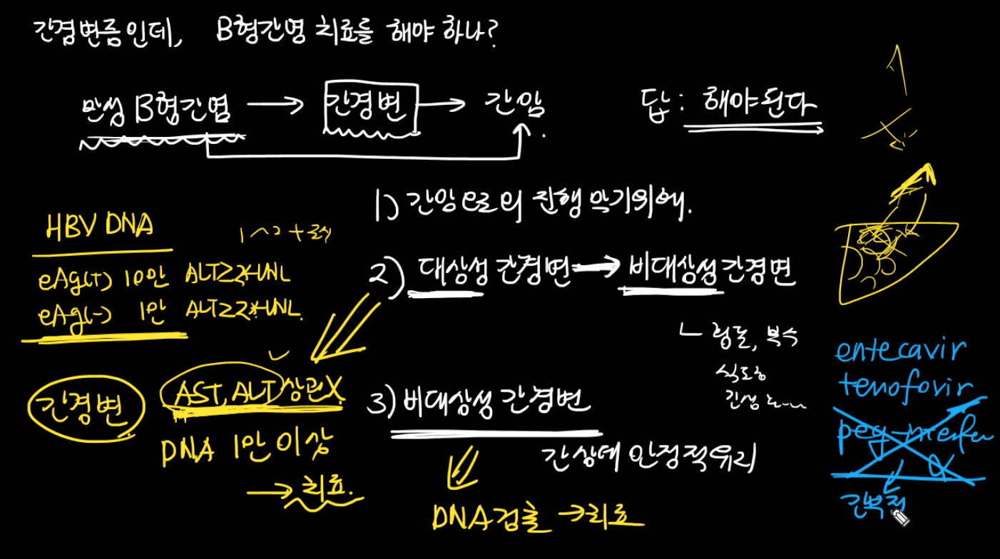
B형간염바이러스, 항바이러스제 먹다 안먹다 하면 어떤 일이 youtube
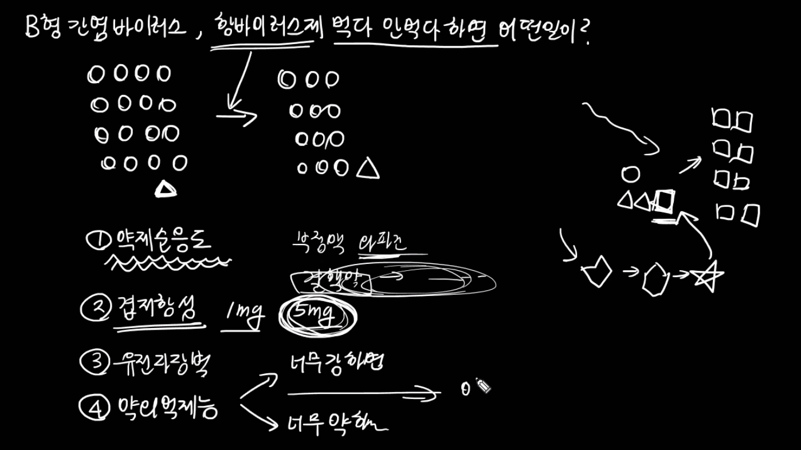
B형간염바이러스, 항바이러스제 내성은 왜 생기는가 youtube

만성 B형간염의 치료 - 인터페론 치료의 문제점 youtube
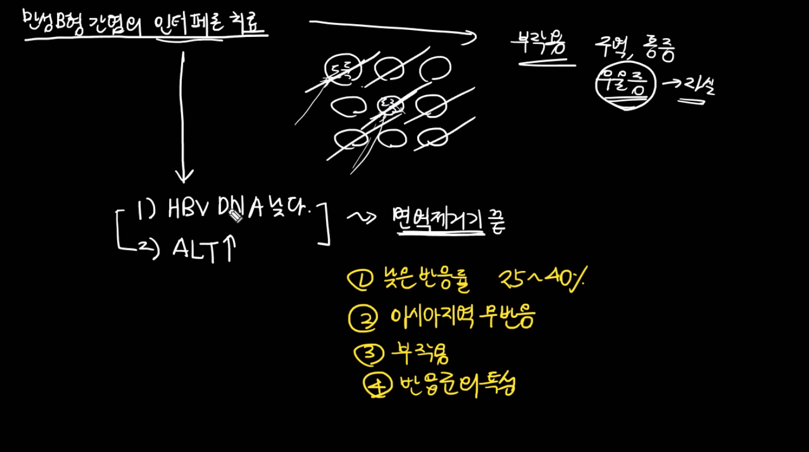
B형간염의 치료, 언제까지 해야하나 youtube
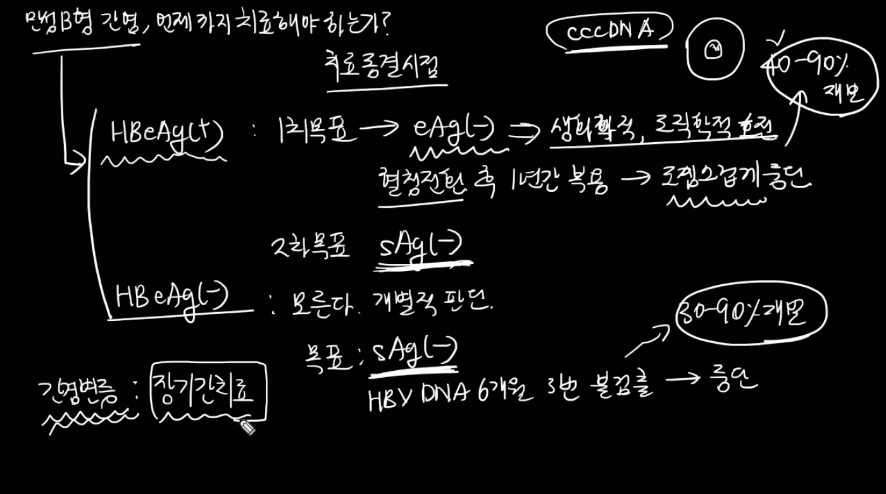
급성 B형간염에서는 왜 경구 항바이러스제 치료를 하지 않을까 youtube

간이식 환자에서의 B형간염 치료 youtube
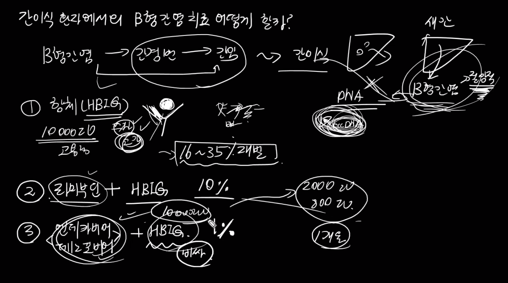
만성B형간염, HIV와의 중복감염시 치료 youtube

항암치료환자에서 B형간염 치료 youtube

간염, 기타
맨위로
자가면역성간염이란 youtube
알코올성간염과 지방간염의 구분 youtube
만성간염의 증상 youtube
만성간염의 분류 youtube
간농양의 진단과 치료 youtube

간흡충증, 실제 어떻게 발견되는가 youtube

우리 몸에서 간이 매우 특별한 이유 - 구독자분의 key question에 대한 답변 youtube

D형간염이란 youtube
간질환시 조심해야 할 약물 youtube
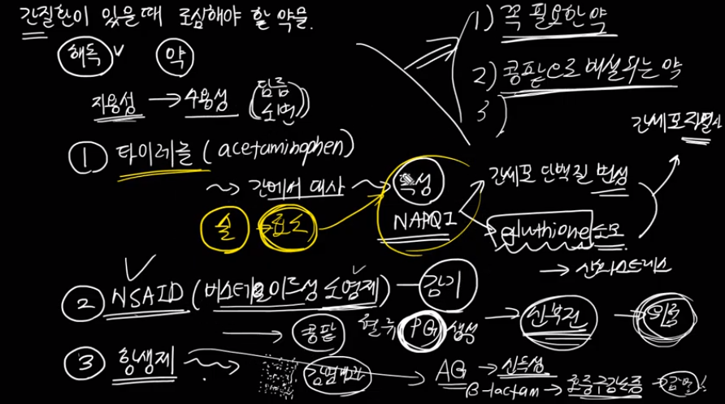
급성바이러스간염 전형적경과2 youtube
급성바이러스간염 전형적경과1 youtube
급성 A형간염의 진단 youtube
A형간염의 감염실태 - 저개발국가에서 더 적은 이유는? youtube
독성 간염, 어떻게 발생하는가? youtube

독성간염, 어떻게 진단하는가 youtube

맨위로